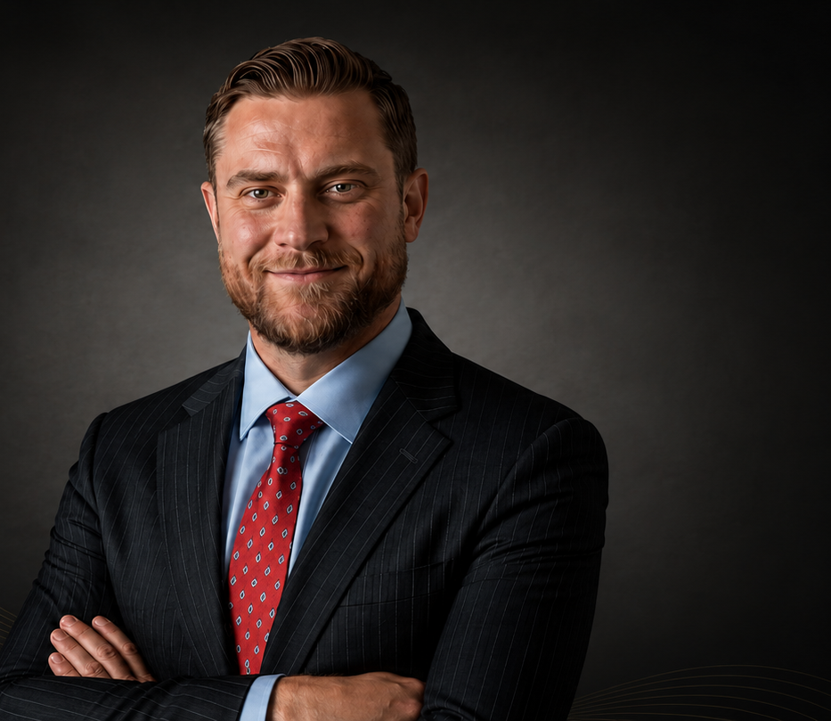
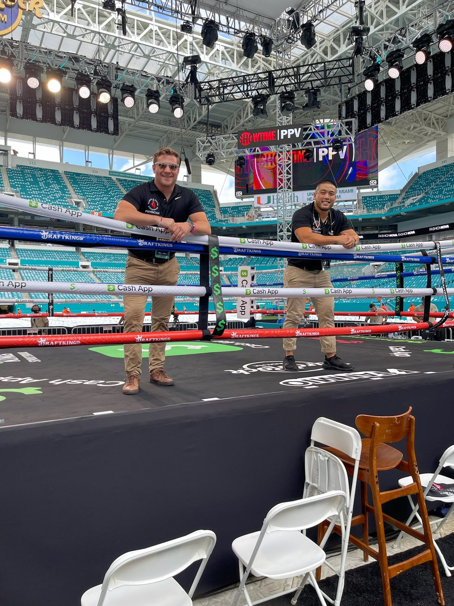
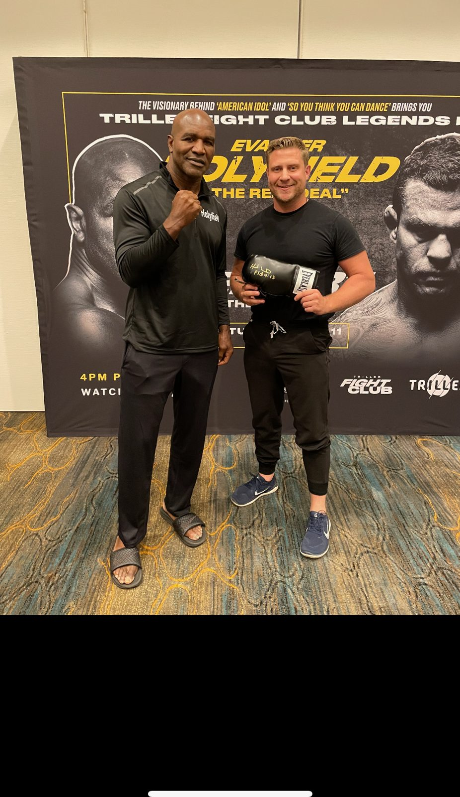
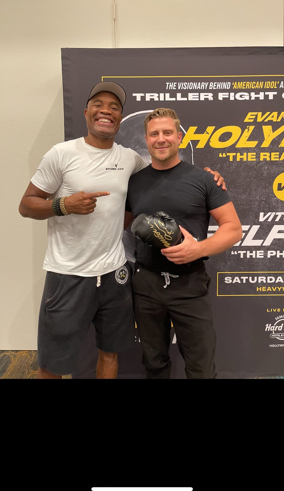
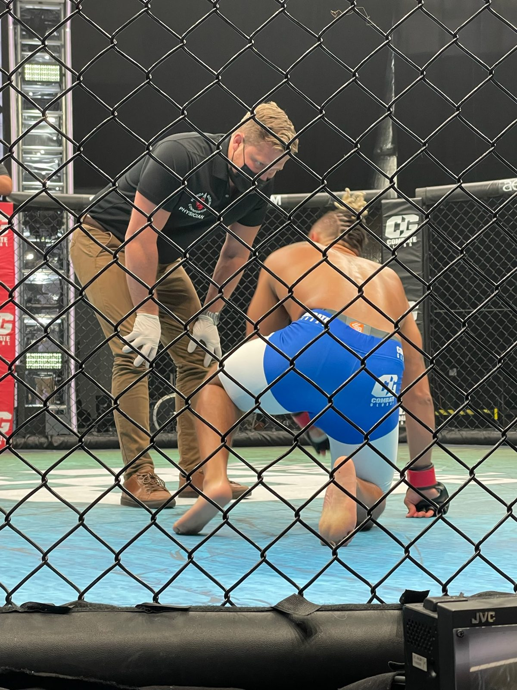

Some physicians learn about pain from textbooks.
He learned it by living it.

Dr. Aleksander Pecherek
As a former semi-professional rugby player and competitive martial artist, Dr. Pecherek understands what it means to push the body to its limits. Like many of the patients he treats, he has experienced orthopedic injuries, setbacks, rehabilitation, and the uncertainty that comes with wondering whether life will ever feel the same again.
Those experiences shaped the physician he would become. They taught him that recovery is rarely just about an X-ray or an MRI — it's about the parent who wants to pick up a child without hesitation, the athlete who wants to return to competition, the grandparent who wants to remain active with family.
Advanced training, honest medicine
After earning his medical degree from the Lake Erie College of Osteopathic Medicine (LECOM), Dr. Pecherek completed residency training in Physical Medicine & Rehabilitation before pursuing advanced fellowship training in Interventional Spine & Sports Medicine through a North American Spine Society (NASS)-recognized fellowship.
Interventional Spine Medicine
Advanced image-guided spinal procedures and minimally invasive interventions.
Sports Medicine
Injury recovery, return-to-sport planning, and performance optimization.
Regenerative Medicine
PRP, PRF, orthobiologics, and evidence-guided regenerative strategies.
Orthopedic Conditions
Musculoskeletal ultrasound and comprehensive non-surgical treatment.
Performance & Longevity
Hormone optimization, hair restoration, weight management, sexual wellness, and healthy aging.
Medicine at the highest level of sport
Beyond the clinic, Dr. Pecherek serves as a Ringside Physician for the Florida Athletic Commission, providing medical care for athletes competing at the highest levels of combat sports — working alongside some of the biggest names in the sport.
Working with elite athletes has further strengthened his understanding of injury prevention, recovery, performance, and the demands placed on the human body.




Helping people stay in the game
Medicine is about more than treating pain. It is about helping people continue living the lives they love. Every patient deserves a physician who listens, a thorough evaluation, honest recommendations — and a treatment plan designed specifically for them.
A lifelong student of medicine
Dr. Pecherek does not believe every patient needs the same treatment, or that one procedure is the answer to every problem. He respects the role of surgery when surgery is appropriate. He values collaboration with physicians across multiple specialties. He believes innovation should always be guided by evidence, experience, and integrity — and that honesty should never be sacrificed for popularity.
Patients often ask why he remains so passionate about what he does. The answer is simple: he knows what it feels like to want one more opportunity to stay active. One more opportunity to compete. One more opportunity to enjoy life without being defined by pain.

Ready to take the next step?
Request a consultation to discuss your symptoms, goals, and available treatment options.